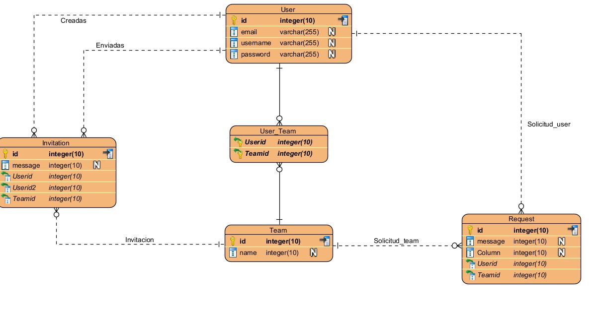

Arquitectura del proyecto
Frontend
Arquitectura del Frontend
La arquitectura del proyecto se basa en entidades y relaciones, lo que permite establecer conexiones y flujos de información adecuados entre los diferentes componentes del sistema. Específicamente, se han definido entidades como usuarios, equipos, invitaciones y solicitudes, con relaciones bidireccionales entre ellas. Por ejemplo, la clase de Usuario está relacionada con Solicitudes e Invitaciones, mientras que las clases de Solicitud e Invitación están relacionadas con Equipos. Esto permite que se establezcan conexiones lógicas entre los diferentes componentes del sistema y simplifica la gestión de relaciones y acciones entre los equipos, sus solicitudes e invitaciones. Es importante asegurarse de que las relaciones y atributos estén correctamente definidos y gestionados en el código para garantizar el correcto funcionamiento del sistema. De esta manera, se pueden evitar errores y problemas en la lógica de la aplicación. Además, el uso de relaciones y entidades bien definidas puede hacer que el desarrollo de nuevas características y la realización de cambios sean más fáciles y menos propensos a errores. En resumen, la arquitectura basada en entidades y relaciones ayuda a crear una estructura sólida y lógica en la aplicación, lo que puede facilitar el desarrollo y la mantenibilidad del sistema en general.
- Componentes reutilizables: Angular permite la creación de componentes reutilizables que se pueden usar en diferentes partes de la aplicación. Los componentes se dividen en pequeñas partes para mejorar la modularidad, facilitando su reutilización y mantenimiento.
- Patrón de diseño: se utilizará un patrón de diseño para asegurar que el código sea escalable, fácil de mantener y reutilizable. Se utilizará el patrón de diseño Modelo Vista Controlador (MVC), donde los modelos manejan los datos, las vistas se encargan de la presentación y los controladores manejan las interacciones del usuario con la aplicación.
- Enrutamiento: Angular tiene una funcionalidad de enrutamiento integrada, lo que permite una navegación rápida y eficiente entre diferentes páginas y componentes de la aplicación.
- Thymeleaf: se utilizará Thymeleaf como motor de plantillas para integrar los componentes front-end con el backend. Thymeleaf es un motor de plantillas de servidor que permite la creación de páginas web dinámicas y se integra fácilmente con frameworks de servidor como Spring.
En resumen, la arquitectura del frontend se enfoca en la creación de componentes reutilizables, el uso de patrones de diseño, el enrutamiento eficiente y la integración con el backend a través de Thymeleaf. Todo esto se realiza con el objetivo de crear una aplicación web de alta calidad que sea fácil de usar, escalable y segura.
Diagrama
Un diagrama de relación es una forma de representar las entidades y sus atributos, así como las relaciones entre ellas, en una base de datos. En este caso, se tiene la clase usuario que representa a los usuarios de un sistema. Cada usuario tiene un id, un email, un username y un password. La clase usuario tiene una relación de muchos a muchos con la clase user_team, que representa los equipos a los que pertenece cada usuario. Cada user_team tiene un userid que hace referencia al id del usuario y un teamid que hace referencia al id del equipo. La clase team representa los equipos que existen en el sistema. Cada team tiene un id y un name. La clase team tiene una relación de uno a muchos con la clase invitation, que representa las invitaciones que se envían entre usuarios para formar parte de un equipo. Cada invitation tiene un id, un message, un userdid que hace referencia al id del usuario que envía la invitación, un userid2 que hace referencia al id del usuario que recibe la invitación y un teamid que hace referencia al id del equipo al que se invita. La clase team también tiene una relación de uno a muchos con la clase request, que representa las solicitudes que se hacen para modificar algún aspecto del equipo. Cada request tiene un id, un message, una column que indica el campo que se quiere modificar, un userid que hace referencia al id del usuario que hace la solicitud y un teamid que hace referencia al id del equipo al que pertenece la solicitud..
Dicccionario
- Mock: Objeto que simula el comportamiento de un objeto real, utilizado en pruebas unitarias para aislar y probar una parte específica del sistema sin depender de otros componentes.
- Framework: Un conjunto de herramientas y/o librerías que proporcionan una estructura para el desarrollo de aplicaciones. Ayuda a los desarrolladores a evitar tareas repetitivas y centrarse en la lógica de la aplicación.
- API: Siglas en inglés de "Application Programming Interface". Un conjunto de reglas y protocolos que permite a diferentes aplicaciones comunicarse entre sí.
- Backend: La parte de un sistema informático que se encarga del procesamiento y almacenamiento de datos. En una arquitectura cliente-servidor, el backend se encarga de la lógica y la gestión de los datos.
- Frontend: La parte de un sistema informático que se encarga de la interacción con el usuario final. Incluye la presentación de información y la recopilación de datos de entrada del usuario.
- ORM: Siglas en inglés de "Object-Relational Mapping". Un conjunto de técnicas y herramientas que permite a los desarrolladores de software manipular datos en una base de datos relacional utilizando objetos de programación.
- Repository: Un patrón de diseño de software que separa la lógica de la base de datos del resto de la aplicación. Permite un acceso simplificado y consistente a los datos de la aplicación.
- Endpoint: En el contexto de una API, es una dirección URL que representa una operación específica que puede realizarse en un servidor.
- Middleware: Un software que se encuentra entre dos sistemas o aplicaciones y que actúa como un puente para facilitar la comunicación entre ellos.
- JWT: Siglas en inglés de "JSON Web Token". Es un estándar abierto que define un método compacto y autónomo para transmitir información segura entre partes como un objeto JSON.
- Usuario: una persona que utiliza un sistema o servicio informático.
- Contraseña: una combinación de caracteres secretos que se utiliza para verificar la identidad de un usuario y permitir el acceso a un sistema o servicio.
- Perfil de usuario: una descripción detallada de un usuario que incluye información personal, preferencias y permisos de acceso en un sistema o servicio.
- Equipo: un grupo de personas que trabajan juntas para lograr un objetivo común.
- ID de equipo: un identificador único que se utiliza para distinguir un equipo de otros equipos en un sistema o servicio.
- Repositorio: un lugar donde se almacena y organiza información digital, como archivos y datos.
- Excepción: un error que ocurre durante la ejecución de un programa o sistema y que interrumpe su funcionamiento normal.
- Prueba unitaria: una técnica de prueba de software que se centra en probar unidades individuales de código para garantizar que funcionan correctamente.
- Prueba de usabilidad: una técnica de prueba de software que se centra en la facilidad de uso y la experiencia del usuario al utilizar un sistema o servicio.